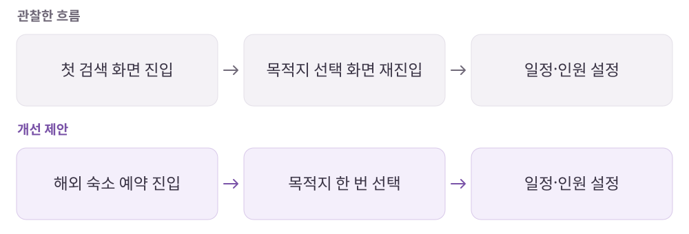

여기어때
국내 숙소와 해외 숙소, 같은 순서로 찾아도 될까?
숙소·항공·액티비티 등을 연결하는 종합 여행·여가 예약 플랫폼.
개인 학습 기록 · 원문에 기록한 당시의 경험을 재구성했습니다. 기획 의도는 개인 해석이며 개선안·확인 지표는 검증 전 제안입니다.
01사용자와 해결 방향
누구를 위한 서비스인가여행에 필요한 여러 예약을 따로 비교하고 결제하는 시간을 줄이고 싶은 사용자.
Why · 사용자의 필요
항공과 숙소를 각각 찾고 조건을 맞추는 일이 복잡하며, 해외 예약은 확인할 정보가 더 많다.
What · 서비스의 답
항공·숙소 결합 상품과 단계별 예약으로 탐색·선택·결제의 부담을 줄인다.
02핵심 기능과 벤치마킹
- 항공+숙소
- 분리된 상품 선택을 하나의 예약 과정으로 연결.
- 국내·해외별 탐색 순서
- 숙소 중심 탐색과 목적지·일정 중심 탐색의 차이를 반영.
- 최종 내역 확인
- 간결한 진행 과정에서 놓친 조건을 결제 전에 다시 확인.
비교해서 살펴본 지점
- 야놀자
- 해외 숙소 조건 설정, 가격 표시와 예약 흐름을 비교.
03사용자 흐름과 기획 의도
목적지를 두 번 고르는 동선 줄이기

관찰한 경험
- 국내 숙소와 해외 숙소의 날짜·인원·장소 선택 순서, 결합 상품의 단계 표시와 최종 확인 화면을 비교했습니다.
- 해외 숙소 첫 검색에서 목적지를 다시 선택하는 동선과 패키지 리뷰 접근의 아쉬움을 기록했습니다.
왜 이렇게 설계했을까 · 나의 해석
- 같은 예약이라도 사용자가 먼저 정한 조건이 다르면 입력 순서도 달라져야 한다고 봤습니다.
- 편리하게 단계를 줄이되 결제 전에는 항공·숙소·인원 조건을 다시 확인할 수 있어야 한다고 해석했습니다.
04문제와 개선 제안
Pain Point · 걸리는 지점
- 해외 숙소 검색 진입 시 비슷한 목적지 선택 화면을 다시 거쳤다.
- 항공+숙소 결합 상품의 실제 경험을 판단할 후기 정보가 부족하다고 느꼈다.
- 원문에 수집한 반응에서는 예약 확인과 취소 대응의 불편도 나타났다.
내가 바꿔본다면
- 목적지 중복 선택을 줄이고 버튼 문구를 실제 다음 행동에 맞게 구체화.
- 항공과 숙소 이용 정보가 함께 담긴 패키지 후기로 선택 근거 보강.
- 예약 연동 상태와 고객지원 대응까지 경험의 범위로 검토.
확인할 지표 · 검증 계획 제안
목적지 검색의 반복 입력과 이탈, 결합 상품 후기 열람 후 예약 전환, 예약 확인 관련 문의를 확인한다.
05장점과 아쉬운 지점
좋았던 점
- 여행 상품을 한 서비스에서 연결해 따로 준비하는 수고를 줄인다.
- 국내·해외 예약의 탐색 맥락 차이를 반영한다.
아쉬운 점 · 더 살필 점
- 짧은 예약 과정과 별개로 공급자 연동·예약 확인·고객 대응의 완결성이 필요하다.
06내가 주목한 점
- 같은 ‘숙소 예약’이라도 사용자 맥락에 따라 필요한 정보의 순서가 다르다.
- 진입 문구가 다음 화면의 실제 행동을 예고하는지 확인할 것.
분석 원문여기어때 · 노션 원문 ↗